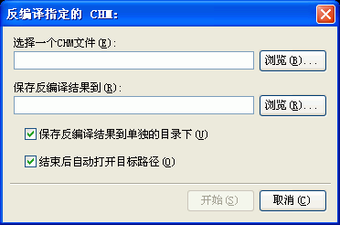

您可以通过选取程序工具菜单下的"反编译指定的CHM..."将看到这个对话框。关于这个对话框的使用请看下面的具体描述.

保存反编译结果到单独的目录下:
决定Easy CHM是否用CHM文件的文件名新建一个目录用来保存反编译的结果.
建议您选中这个选项以避免不必要的文件覆盖.
结束后自动打开目标路径:
如果您选取 结束后自动打开目标路径 则在反编译结束后程序将自动打开指定的目标路径.
注意: 在什么时候会需要反编译？当您的网页源文件都找不到而只有制作好的CHM文件时，或者是当您希望对某个CHM文件进行二次编辑时都需要先反编译--也就是先得到CHM文件里的全部源文件，以便再次编辑.
| 版权所有 © 2000-2007 国华软件 保留全部权利. |